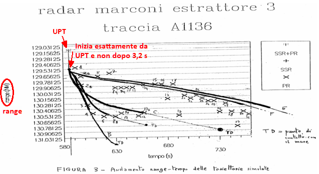

La modalità con la quale l'aereo è caduto in mare riveste notevole importanza nello stabilire la causa che ne ha determinato tale caduta.
In questa pagina non si cercherà di stabilire la causa dell'evento catastrofico (come definito in alcune perizie), ma si cercherà, invece, di verificare l'ipotesi secondo la quale i motori del DC-9 si sarebbero staccati dalla fusoliera dopo pochi istanti dall'evento catastrofico, quando l'aereo si trovava ancora alla quota di crociera.
L'ipotesi da verificare è quindi: i motori si sono distaccati dalla fusoliera alla quota di crociera (livello di volo 250) e hanno impattato la superficie del mare sulla verticale del punto del ritrovamento (una volta impattato il mare, i motori si sono inabissati in verticale).
Per evitare di appesantire la lettura ripetendo continuamente una frase così lunga, ogni volta che in questa pagina ci si riferirà all'ipotesi in grassetto, verrà usata la grafia IPOTESI.
Nel tentativo d'invogliare quanti più visitatori possibili ad approfondire e ad eseguire personalmente le simulazioni presentate in questa pagina, ho preparato la pagina "Simulazioni numeriche" in cui spiego in modo molto pratico e senza formalismi la matematica che sta alla base delle simulazioni.
INDICE
Coordinate dei motori
Il riferimento usato in questo sito per le coordinate del punto di recupero dei motori è il filmato "Immersioni recupero DC-9 ITAVIA - Filmato N°2", dal quale risulta che le coordinate della "zona dei reattori" sono: 39° 41,8’ N, 13° 2,44’ E.
Il documento "TITOLO 3 - Le Perizie", a fine pag. 90 e a pag. 91, ci dice che il motore sinistro è stato recuperato nei giorni dal 10 giugno al 2 luglio 1987, mentre il motore destro è stato recuperato durante la seconda campagna dal 17 aprile al 25 maggio 1988.
Siccome la data mostrata dal "Filmato N° 2" è 22/5/1988, se ne deduce che le coordinate si riferiscono al motore destro.
Per determinare la posizione del motore sinistro, abbiamo tre documenti che, però, sono in contrasto tra loro:
l'"UDIENZA DEL 15.05.2003", durante la quale il consulente Eula riferisce che "i motori sono stati trovati separati sul fondo del mare di circa cinquecento metri" (v. pag. 120);
la consulenza di parte imputata "Capitolo XXXVI - Consulenza tecnica Bazzocchi ed altri - 18.07.92." riporta a pag. 20: "Il fatto che la loro distanza reciproca [tra i motori, ndr] sia passata dai circa cinque metri del momento in cui erano solidali con fusoliera ai circa 380 metri del momento di cui si sono adagiati sul fondo del mare, [...]";
la perizia "Capitolo XLVIII - Perizia tecnico-scientifica Misiti ed altri - 23.07.94." riporta a pag. 36: "[...] i due motori sono stati recuperati nella stessa zona B con il sinistro più a Sud [...]" e a pag. 48: "Questa ipotesi è in accordo con le caratteristiche di ritrovamento dei due motori nella stessa zona, a distanza circa 1000 metri l’uno dall’altro (misurati secondo la direzione del moto iniziale), [...]".
Ad ogni modo, per gli argomenti trattati in questa pagina, la conoscenza della posizione di uno dei due motori è sufficiente, in quanto, dal punto di vista delle simulazioni qui presentate, i motori seguirebbero una traiettoria identica, dato che i motori sono identici. Il fatto che in realtà i due motori siano stati ritrovati distanti qualche centinaio di metri significa che hanno subito sorti differenti dopo dell'evento catastrofico.
Traiettoria di caduta dei motori
La verifica sul distacco dei motori in quota presentata in questa pagina si basa su una simulazione simile a quella appena accennata nel documento "TITOLO 3 - Le Perizie", pag. 37, con la differenza che quella simulazione riguarda i frammenti dell'aereo, mentre qui viene simulata soltanto la caduta dei motori.
Questo tipo di simulazione è concettualmente molto semplice:
si posiziona il motore nel punto in cui si trovava prima dell'ipotetico distacco e gli si dà la velocità (intesa come vettore tridimensionale) che aveva l'aereo nell'istante dell'abbattimento;
da questo momento in poi, si applicano le leggi della fisica che descrivono il moto di un oggetto in caduta libera e si calcolano la posizione e la velocità (due vettori tridimensionali) applicando tali leggi e facendo avanzare il tempo di simulazione a piccoli passi;
durante la caduta, il motore presenta l'asse longitudinale parallelo al vettore velocità rispetto all'aria;
quando la quota scende a zero, s'interrompe la simulazione.
Il grado d'attendibilità della simulazione è molto variabile, perché dipende da moltissimi fattori. È evidente che quanto più piccola è l'incertezza sui parametri considerati nella simulazione, tanto maggiore sarà la sua attendibilità. In base alle considerazioni fatte nelle pagine "Meteo lungo la rotta" e "Ultimi minuti" si può avere un'elevata confidenza che le condizioni meteo e quelle iniziali del motore (posizione e velocità) sono molto vicine a quelle reali.
Per ciò che riguarda il modello usato per simulare il motore e la caduta, è stato fatto tutto il possibile per includere ogni minimo dettaglio:
la massa del motore è stata assunta pari a 1500 kg;
la gondola motore ha un'area frontale pari a 0,78 m2;
le condizioni meteo variano in funzione della posizione e del tempo;
la densità dell'aria è calcolata tenendo conto anche del vapore acqueo in essa presente.
Veniamo, finalmente al risultato.
La cartina mostra la traiettoria di caduta dei motori (colore verde).
La crocetta centrata sul motore destro è ampia 2 x 2 nm.
Il cerchio centrato sul motore destro ha un raggio di 500 m; per il suo significato si veda il paragrafo "Accuratezza della posizione dei motori → Incertezza sulla posizione", più avanti.
L'area delimitata dal colore blu rappresenta l'incertezza sulla posizione del DC-9 nel momento in cui il transponder ha trasmesso l'ultima risposta (ore 18:59:45; si veda il successivo paragrafo).
Il grosso rettangolo viola rappresenta l’area di ritrovamento dei relitti sommersi (v. "TITOLO 3 - Le Perizie", fine pag. 90).
Sono, infine, riportate le tre zone nelle quali sono stati ritrovati i motori, il relitto principale (che è quella contenente l'FDR, v. "Capitolo XLVI - Perizia tecnico-scientifica Misiti ed altri - 23.07.94", pagg. 18 e 26) e la coda (l'area più a est). Le coordinate di queste tre zone sono state ricavate dalla figura 2 a pag. 9 del "Capitolo XLI - Consulenza radaristica Neri-Giubbolini - 25.05.93.".
Muovendo il puntatore del mouse lungo la traiettoria, vengono mostrate varie informazioni; l'etichetta che compare è organizzata come segue:
Tempo
Distanza al suolo
Quota
Velocità all'aria
Velocità al suolo
Velocità verticale
Latitudine
Longitudine
Particolarmente utili sono le due velocità GS e Vv, in quanto consentono di stabilire con sufficiente accuratezza che se veramente i motori si fossero staccati in quota, sarebbero piombati sul mare con una velocità orizzontale residua di ben 150 kn (280 km/h) e con una velocità verticale intorno ai 900 km/h.
Il documento "TITOLO 3 - Le Perizie", prima citato, riporta a fine pag. 99: "Solo su alcune pale e sul bordo anteriore di esse si notavano delle ammaccature, denotanti che piccoli oggetti erano penetrati negli stadi iniziali del compressore".
Se i motori fossero veramente caduti in mare con quelle velocità, è molto probabile che invece di recuperarli "malridotti" (come scritto in perizia), sarebbero stati ritrovati con danni ben più evidenti, almeno nel compressore di bassa pressione.
La simulazione, quindi, colloca il punto di caduta dei motori 3,1 km più a sud del reale punto di recupero del motore destro.
È da considerare, però, che la simulazione parte dalle 18:59:45, cioè quando il transponder ancora funzionava, quindi certamente prima dell'effettivo inizio della caduta in mare, perché l'evento catastrofico è avvenuto entro 5,6 s dalle 18:59:45 (cioè prima del successivo giro d'antenna del radar Marconi).
In 5,6 s, il DC-9 percorreva in quel momento più di 1,3 km, per cui il risultato della simulazione può essere collocato tra 3,1 km e 4,4 km a sud del punto di recupero del motore destro.
Incertezze sui parametri e simulazioni Monte Carlo
La traiettoria mostrata in precedenza è stata ottenuta facendo la simulazione con parametri ben definiti, ma ci si potrebbe domandare cosa accadrebbe se la massa del motore non fosse proprio 1500 kg, ma 1800 oppure 1300. E se il vento fosse stato 10 kn più debole o 10 kn più forte dove sarebbero finiti i motori? E, ancora, se la velocità al momento dell'abbattimento fosse stata 10 kn più alta o 10 kn più bassa? E così via.
Per rispondere a tutte queste domande perfettamente lecite, si potrebbe decidere di fare un'altra simulazione fissando una massa di 1800 kg e vedere cosa succede, poi un'altra con un vento 10 kn più debole, un'altra ancora variando sia la massa che il vento, ecc. In pratica, ciò che serve è il metodo Monte Carlo. Nel nostro caso, l'applicazione pratica di questo metodo consiste nel far variare tutti i parametri della simulazione aggiungendo o sottraendo un valore casuale ad ognuno dei parametri in modo tale che il parametro reale sia certamente compreso all'interno del campo di variabilità prefissato. Ripetendo la simulazione molte volte, si otterranno tanti risultati che prendono in considerazione praticamente tutte le possibili situazioni in cui il DC-9 si potrebbe essere trovato al momento dell'ipotetico distacco dei motori. Non si potrà conoscere la posizione esatta di caduta dei motori, ma questo non è un problema, perché ciò che interessa è verificare se c'è una remota possibilità che i motori possano essere caduti nel punto del ritrovamento dopo essersi staccati in quota.
Per effettuare la simulazione Monte Carlo, oltre a tutte le incertezze casuali da introdurre sui parametri prima elencati, è necessario includere anche quella sulla posizione del DC-9 al momento dell'abbattimento.
Al di là delle molte considerazioni teoriche tramite le quali alcuni periti e consulenti sono pervenuti ad una stima altrettanto teorica dell'errore dei radar di Ciampino, in questa sede interessa avere un valore dell'errore massimo sulla distanza e sull'azimut dal radar che sia direttamente utilizzabile nella simulazione.
Il grafico mostra la distanza dei plot relativi all'IH870 nei suoi ultimi minuti di vita, così come riportati nel tabulato dell'estrattore 3 (radar Marconi).
La linea tratteggiata è la parabola usata per l'interpolazione (la curvatura è talmente piccola da farla sembrare una retta). I punti arancioni mostrano la differenza tra la distanza di ogni plot e la distanza interpolata (sono chiamati scarti o errore d'interpolazione).
Ciò che interessa calcolare, è quanto grande può essere l'errore d'interpolazione della distanza dal radar in un orario qualunque all'interno dell'intervallo di tempo interpolato.
Un'analisi numerica degli scarti evidenzia che questi sono ben approssimati dalla distribuzione normale. Quindi si potrebbe affermare che l'errore non supera 3 volte la deviazione standard (indicata con σ) con una confidenza del 99,7%. Siccome la deviazione standard dei 37 scarti mostrati è pari a 0,01988 nm e la loro media è nulla, si può scrivere che l'errore è compreso tra ±3σ = ±0,06 nm con il 99,7% di confidenza.
Tuttavia, tenendo sempre presente che lo scopo di tutto ciò è verificare se esiste una remota possibilità che i motori possano essere caduti nel punto del recupero dopo essersi distaccati in quota, si può decidere di mettersi nelle condizioni più sfavorevoli ed effettuare i calcoli come se la distribuzione degli errori fosse sconosciuta. Questo obbliga a ricorrere alla diseguaglianza di Chebyshev (già vista in altra parte del sito), valida per qualunque distribuzione, tramite la quale si può affermare che gli errori sono compresi entro ±20σ con una confidenza sicuramente non inferiore al 99,75%. Quindi si può usare come incertezza sulla distanza dal radar un valore pari a ±0,4 nm, con la consapevolezza che un errore superiore è estremamente improbabile.
Ben diversa è la situazione per l'azimut. La variabilità è decisamente più evidente di quella sulla distanza. Tuttavia, anche in questo caso, la distribuzione degli scarti è ben approssimata dalla distribuzione normale, ancor meglio che nel caso della distanza (esistono particolari tecniche e parametri che consentono di stabilirlo in modo oggettivo, ad esempio: la stima del kernel di densità, il test di Kolmogorov-Smirnov, analisi dei parametri chiamati asimmetria e curtosi, ecc.).
Siccome la deviazione standard degli scarti è pari a 0,2668° e la loro media è nulla, l'errore è compreso tra ±0,8° con il 99,7% di confidenza (±3σ).
Anche per l'azimut si potrebbe utilizzare l'intervallo ±20σ come per la distanza. Considerando, però, che la distribuzione degli scarti per l'azimut è molto ben approssimata da quella normale, è lecito utilizzare questa, evitando di usare un'incertezza inutilmente esagerata e del tutto irrealistica.
All'incertezza derivante dall'interpolazione, va aggiunta quella derivante dal metodo usato per determinare lo sfasamento del radar. Per ciò che riguarda i soli plot situati alla distanza di 110/130 nm dal radar Marconi, le analisi fatte suggeriscono che ±0,2° è un margine più che sufficiente.
Parametro
Incertezza [±]
Distanza dal radar
0,4 nm
Azimut dal radar
1°
Quota
1000 ft
Velocità al suolo
5 kn
Rotta
2,5°
Massa del motore
300 kg
Cr del motore
15%
Densità dell'aria
8%
Pressione atmosferica
8%
Velocità del vento
8 kn
Direzione del vento
15°
La tabella elenca il valore di tutte le incertezze assegnate ai vari parametri all'inizio di ogni simulazione.
Tutte le simulazioni Monte Carlo presentate in questa pagina adottano tali incertezze.
Ad ognuno dei parametri elencati, prima d'iniziare la simulazione viene assegnato un valore casuale con distribuzione uniforme all'interno dell'incertezza indicata in tabella, in più o in meno rispetto al valore nominale.
La distanza e l'azimut dal radar Marconi vengono usati per il calcolo della posizione iniziale del DC-9 (e quindi del motore che si stacca).
La pressione atmosferica viene usata solamente per calcolare il numero di mach, a sua volta usato per il calcolo del coefficiente di resistenza del motore. Il valore "Cr del motore", quindi, è affetto da due incertezze: una fissa pari al 15% del valore nominale e una variabile in funzione del numero di mach.
La cartina mostra la traiettoria di caduta dei motori (colore verde scuro) già vista in precedenza e i puntini di colore verde chiaro che rappresentano le 5000 simulazioni Monte Carlo.
L'etichetta che compare posizionando il puntatore del mouse sopra ai puntini è organizzata come segue:
Tempo di caduta
Altezza geometrica iniziale
Velocità al suolo iniziale
Velocità al suolo finale
Velocità verticale finale
Latitudine
Longitudine
È piuttosto evidente che non esiste nemmeno la più remota delle possibilità che i motori possano essere andati a finire nel punto in cui sono stati recuperati.
Siccome la velocità dei motori al momento del distacco è troppo elevata per andare a cadere nel punto del recupero, tramite un'ulteriore simulazione Monte Carlo si può determinare la velocità iniziale che avrebbero dovuto avere i motori per cadere in anticipo rispetto alla traiettoria appena vista.
La cartina mostra la traiettoria di caduta dei motori (colore verde scuro) ottenuta con i parametri nominali ed una velocità al suolo iniziale pari a 252 kn, il 54% della velocità del DC-9 al momento dell'abbattimento (467 kn).
I 5000 puntini della simulazione Monte Carlo mostrano che per iniziare ad avere una piccolissima probabilità di ritrovare i motori nell'effettivo punto del recupero, la velocità al suolo iniziale non avrebbe dovuto superare 325 kn circa, altrimenti i motori avrebbero avuto sufficiente energia per arrivare più a sud.
Le perizie e consulenze che sostengono l'IPOTESI parlano di una rapidissima sequenza di avvenimenti accaduti nell'arco di pochi secondi.
Il vincolo sulla velocità iniziale dei motori inferiore a 325 kn (altrimenti sarebbero caduti troppo a sud) e il fatto che l'aereo stava viaggiando con una velocità al suolo 142 kn più alta implica che per i primi due o tre secondi, i motori dovevano ancora essere attaccati alla fusoliera, mentre l'aereo si stava distruggendo rapidamente in volo in modalità tale da far diminuire repentinamente il coefficiente balistico, dato da CB = massa / (Area · Cr) (principalmente tramite l'aumento del coefficiente di resistenza Cr). Così facendo, la parte di fusoliera con attaccati i motori ha dovuto rallentare di ben 140 kn in un paio di secondi, dopo di che i motori si sono staccati dalla fusoliera. In tal modo, i motori avrebbero avuto una velocità appena compatibile con quella necessaria ad avere una piccolissima probabilità di cadere nel punto del ritrovamento. Una probabilità più elevata si ottiene con una velocità ancora più bassa di qualche decina di nodi.
Una decelerazione di tale entità sembra, a dir poco, altamente improbabile.
Anziché diminuire la velocità orizzontale, si potrebbe aumentare quella verticale per ottenere il medesimo punto di caduta.
Un risultato uguale a quello appena visto per la simulazione con velocità orizzontale ridotta, lo si ottiene con una velocità verticale iniziale dei motori pari a 180 m/s (650 km/h), ovviamente verso il basso. Tale velocità dovrebbe essere trasmessa dall'aereo ai motori da una particolare rotazione intorno ad uno o più assi, ad esempio cabrando e/o rollando. Data, tuttavia, la notevole entità del valore minimo necessario, l'ipotesi appare del tutto inverosimile. Inoltre, la velocità verticale finale che raggiungerebbero i motori arriverebbe a circa 1050 km/h.
Traiettoria dei motori secondo la consulenza Bazzocchi
Il collegio di consulenti di parte imputata coordinato dall'ing. Bazzocchi è tra i pochi ad evidenziare ciò che nel precedente paragrafo è stato matematicamente dimostrato, cioè che i motori non possono cadere nel punto di ritrovamento dopo essersi distaccati in quota; si veda "Capitolo LXXI - Consulenza tecnica Bazzocchi - 31.12.94." a fine pag. 2.
Quindi, per sostenere in ogni modo l'ipotesi della bomba, Bazzocchi deve far picchiare il DC-9 con un angolo di ben 55° e con una velocità iniziale rispetto al suolo uguale a quella che l'aereo aveva prima dell'abbattimento (240 m/s o 467 kn).
La cartina mostra la traiettoria di caduta di un motore (colore verde) ipotizzando che il distacco dalla fusoliera sia avvenuto 4 s dopo dell'ultima risposta del transponder, momento in cui il DC-9, con i motori al loro posto, aveva un assetto di 55° a picchiare. Così facendo, il motore simulato finisce all'interno dell'area d'incertezza del recupero del motore destro, rendendo accettabile quest'ipotesi dal punto di vista della fisica.
L'etichetta che compare muovendo il mouse sopra alla traiettoria verde mostra una velocità al suolo iniziale (GS) pari a 268 kn, anziché 467 kn, perché GS è la componente parallela al suolo (o al mare) di quei 467 kn: GS = 467 · cos(-55°).
L'altra componente (quella verticale) è pari a 467 · sen(-55°) = -382,5 kn, equivalenti a quasi 39000 ft/min (!).
L'ing. Bazzocchi fornisce una dettagliata sequenza di eventi che conduce al collasso, come descritto all'inizio della pagina
"La lunga planata".
Da ciò che si può apprendere leggendo il documento "Capitolo LXIX - Consulenza tecnica Bazzocchi ed altri - 15.12.94." a pag. 9 o "Capitolo XLVI - Consulenza tecnica Bazzocchi - 09.06.94." a pag. 13, i motori si sono distaccati dalla fusoliera quando l'aereo volava ancora livellato. Solo successivamente, secondo il collegio Bazzocchi, il DC-9 effettua una brusca picchiata che, quindi, non può aver fatto assumere ai motori un angolo di caduta pari a 55°, in quanto si sono staccati prima della picchiata.
Stante ciò, non è chiaro quale sarebbe stata la causa che ha fatto assumere ai motori un angolo di 55° a picchiare.
L’Ufficio rileva anche come sia stato commesso un grave errore
concettuale nella determinazione delle traiettorie di caduta del frammento principale e del tronco di coda[non dei motori, ndr] perchè per essi non è applicabile la teoria
basata sulla valutazione del parametro K (od R) [il coefficiente balistico, ndr].
Tale teoria, infatti, è applicabile solo a corpi che cadono sotto l’influenza della forza peso e della
forza di resistenza aerodinamica. I predetti frammenti, essendo dotati di
superfici aerodinamiche e potendo quindi sviluppare anche notevoli forze
di portanza, possono percorrere traiettorie completamente diverse da quelle
ipotizzate e non precisamente definibili. I risultati presentati e le
conseguenti ipotesi di frammentazione del velivolo sono pertanto del tutto inaffidabili.
sacrosanto e totalmente condivisibile. Il commento, come evidenziato, non si applica ai motori.
Traiettoria dei frammenti secondo la consulenza Neri-Giubbolini
Per poter portare a terra gli oggetti in punti antecedenti alle zone A e B è necessario ipotizzare un’inclinazione verso il basso della velocità
iniziale. L’ipotesi è compatibile col fatto che in conseguenza alla perdita della coda l’aeromobile abbia subito una rapida picchiata insieme ai motori
che subito dopo si sono distaccati.
Le due traiettorie simulate relative al relitto principale ed ai motori
partono infatti con un’inclinazione verso il basso della velocità iniziale pari
a 55° fermo restando il modulo di 240m/sec.
In pratica, la prima parte del brano può essere riscritta, senza cambiarne il significato, nel modo seguente: "Siccome è una certezza che la coda s'è staccata nell'immediatezza dell'evento catastrofico e che i motori sono stati ritrovati in zona B, per forza di cose i motori si sono staccati quando l'aereo stava picchiando, altrimenti i motori non sarebbero caduti in zona B". Tuttavia non si ha alcuna certezza che la coda e i motori si siano staccati nell'immediatezza del disastro, né, tantomeno, si può avere la certezza che i motori si siano staccati proprio quando l'aereo picchiava di 55° o di 32° o di 79°; è assolutamente impossibile calcolare quell'angolo.
Ciò che fanno questi due consulenti, dunque, è ipotizzare una sequenza di eventi, dandola per certa, per poi aggiustare in modo completamente arbitrario il vettore velocità iniziale come fa più comodo a loro.
Il capitolo XLI fornisce molti dettagli sulla simulazione eseguita dai consulenti per determinare le traiettorie di vari elementi del DC-9 dopo l'evento catastrofico.
A pagina 6 vengono elencate le caratteristiche del simulatore, tra cui: "B1 Modello del punto materiale con resistenza aerodinamica (Cd) non dipendente dalla velocità", questo significa che il commento dell'A.G. riportato alla fine del precedente paragrafo sulla consulenza Bazzocchi è applicabile anche alla simulazione Neri-Giubbolini.
Il fatto di modellare gli oggetti simulati come punti materiali significa, a tutti gli effetti pratici, considerarli come sfere, in quanto l'area esposta al vento relativo è costante come lo è il coefficiente di resistenza aerodinamica, qualunque sia il moto dell'oggetto rispetto all'aria (sebbene il coefficiente di resistenza non sia costante nemmeno per una sfera, ma varia in funzione del numero di Reynolds, quindi varia sia in funzione della velocità che della quota).
I parametri dei vari elementi simulati sono presentati nella tabella 2 a fine pag. 10. Salta subito all'occhio la massa di 150 kg assegnata ai motori, esageratamente piccola (sembra che manchi uno zero alla massa di tutti gli elementi). Un valore decisamente più accurato per la massa dei motori JT8D-7A installati nell'I-TIGI (v. "TITOLO 3 - Le Perizie. (Capitolo V - Perizia Tecnica Blasi ed altri - 17.03.89.)", pag. 64) può essere letto nel certificato di tipo a pag. 2: 3205 lb (1454 kg) per il motore "a secco" (senza fluidi) e con gli accessori essenziali. A questo valore deve essere aggiunta la massa della gondola e quella dell'inversore di spinta, per un totale di circa 300 kg. La massa complessiva poteva, quindi, essere intorno ai 1800 kg.
Ciò che conta, comunque, ai fini della simulazione è il valore Ksimulato = 0,004 m2/kg, il coefficiente balistico. Bisogna, infatti, tenere presente che l'equazione usata per il calcolo della resistenza aerodinamica è: R = ½ ρ V2 CD S, (v. Aerodinamica → Resistenza), ma siccome la simulazione ha bisogno dell'accelerazione (che è la derivata della velocità, usata nelle equazioni differenziali che descrivono il moto del motore in caduta, v. anche la pagina "Simulazioni numeriche"), l'equazione, in base al secondo principio della dinamica, diventa: a = R / m = ½ ρ V2 CD S / m.
Usando la formula presentata nella tabella 2: K = CD S / M, la precedente equazione può essere riscritta come: a = ½ ρ V2 Ksimulato, dalla quale risulta chiaro che non è rilevante, ai fini del risultato ottenuto, il valore dei singoli parametri che compongono K; conta solo il valore 0,004.
Ad esempio, se vogliamo calcolare l'effettiva massa del motore corrispondente a Ksimulato = 0,004 m2/kg, possiamo utilizzare S = 1,77 m2[nota]
e CD = 0,503, valore ricavato dal documento pubblicato dalla NASA (nominato in precedenza) per velocità intorno a mach 0,7.
Dalla formula di prima risulta M = CD S / K = 0,503 · 1,77 / 0,004 = 222,6 kg, valore del tutto privo di senso, ma l'adozione del valore 0,004 potrebbe essere spiegata ipotizzando che i consulenti abbiano supposto che un pezzo di fusoliera sia rimasto attaccato al motore durante la caduta; questo fa variare sia CD che S (v. prossimo paragrafo "Traiettoria dei motori con parte di fusoliera").
Calcolando il prodotto CD S = K M = 0,004 · 1800 = 7,2 m2 e considerando che CD potrebbe essere compreso tra 0,5 (motore senza alcuna parte di fusoliera) e circa 1 (motore con parte di fusoliera), si può ritenere che Ksimulato = 0,004 m2/kg possa rappresentare un motore con alcuni metri quadrati di fusoliera ad esso attaccata.
Nel capitolo XLI dell'Ordinanza-Sentenza non viene specificata la quota d'inizio simulazione.
Siccome alcuni periti e consulenti considerano l'altitudine di pressione tenuta dal DC-9 (livello di volo 250) uguale alla quota sul livello del mare, mentre altri distinguono tra livello di volo e quota sul livello del mare, ponendo quest'ultima pari a circa 26000 ft (valore molto vicino al vero), conviene considerare la media tra le due quote, assegnando alla quota iniziale il valore di 25500 ft, ben sapendo che una differenza di 500 ft è del tutto trascurabile (le approssimazioni fatte in questa consulenza e in quella del collegio Bazzocchi danno origine ad errori molto più significativi).
Una volta impostato il modello del vento come riportato a pag. 8 e posizionato il DC-9 a 768 m dall'UPT (v. punto B5.2 a pag. 6), abbiamo, finalmente, definito tutto ciò che serve per replicare la simulazione.
Il risultato è visualizzato in questa cartina che mostra, in verde scuro, le traiettorie di caduta del motore, del relitto principale e della coda aventi K indicato in tabella 2 e in rosso, tre curve che torneranno utili nel seguito.
Con il colore verde chiaro è riportata la curva d'inviluppo, che è il luogo dei punti in cui cadono frammenti con diverso K e con velocità verticale iniziale nulla; quindi, le traiettorie che non finiscono su questa curva rappresentano oggetti che inizialmente picchiano di 55°. L'etichetta mostra il coefficiente balistico espresso sia in kg/m2 (CB) che in m2/kg (K).
I tre punti arancioni sono, da nord a sud: UPT, UPT + 768 m e il punto di caduta dei motori, tutti come definiti o calcolati nel capitolo XLI. Si nota come l'UPT usato dai due consulenti (v. pag. 11) sia molto vicino (250 m) all'UPT calcolato in questo sito applicando la rotazione dei plot come spiegato nella pagina "Allineamento radar Marconi e Selenia".
È evidente la totale incompatibilità dei punti di caduta con le zone dell'effettivo ritrovamento. Sembrerebbe (data per scontata la buona fede dei consulenti) che la tabella 2 riporti K di ogni elemento come se fosse "sfasato" di una riga, perché, in realtà, il motore con K = 0,004 (usato dai consulenti) cade nei pressi della zona del relitto principale, mentre questo cade in realtà nei pressi della zona della coda e la coda cade in zona F (v. mappa a pag. 9), che è la zona della scaletta.
È altresì evidente che la curva B (in rosso) si avvicina alla zona motori, pur restandone ampiamente al di fuori. Questa curva, dato il valore di K usato, potrebbe simulare un motore con i piloni rimastigli attaccati insieme ad una piccola parte della fusoliera (come calcolato in precedenza).

Questa immagine è presente a pag. 11 del capitolo XLI. Essa riporta la distanza dei plot battuti dal radar Marconi a partire dall'UPT (battuto alle 18:59:45) in funzione del tempo (collocando l'UPT al tempo 585 s, significa che i consulenti hanno scelto come tempo zero l'orario 18:50, momento in cui l'IH870 era prossimo a Ponza).
Vediamo che le curve sono contrassegnate con le lettere riportate in tabella 2.
Aiutandosi con un programma di computer-grafica, si può determinare che l'UPT viene collocato al range di 129,108 nm. Considerato l'utilizzo della parola range, sembrerebbe che la distanza sia quella dal radar. Il tabulato relativo all'estrattore 3 del radar Marconi riporta l'UPT in questo modo:
Tenendo presente che le due cifre dopo il punto rappresentano i 32i di miglio nautico, il range dell'UPT è 129 + 4 / 32 = 129,125 nm dal radar Marconi.
Considerando le coordinate riportate a pag. 11 (poco prima della figura 3), l'UPT si trova a 129,0106 nm dal radar Marconi (facendo i calcoli per la Terra modellata come un ellissoide).
Sembrerebbe, dunque, che l'UPT sia collocato dai consulenti alla distanza R riportata nel tabulato che, tuttavia, si trova ad una distanza radiale dal punto avente le coordinate indicate a pag. 11 pari a (129,125 - 129,0106) × 1852 = 212 m, equivalenti a più del 21% di un lato della zona motori, differenza, quindi, non proprio trascurabile.
Un'ulteriore incongruenza consiste nell'aver posizionato l'inizio delle simulazioni esattamente allo stesso tempo dell'UPT, quando, invece, gli stessi consulenti affermano che il disastro è avvenuto 3,2 s dopo l'UPT.
Questo grafico replica la figura 3 appena vista e riporta esattamente gli stessi valori usati per la mappa delle traiettorie (fermandosi a 200 s dall'UPT per maggiore chiarezza), con la stessa codifica dei colori. Il tempo t è quello dall'UPT, mentre nella mappa delle traiettorie il tempo parte dal momento del disastro (3,2 s dopo l'UPT).
Le evidenti differenze tra la figura 3 e le curve verdi di questo grafico non sono facilmente spiegabili. Pur prendendo atto del lavoro certosino svolto dai consulenti nel disegnare manualmente tutti quei punti e curve, non risulta in alcun modo possibile pensare ad un accidentale "sfasamento" di righe dei valori di K.
La curva B della figura 3, che dovrebbe avere K = 0,004, è ben approssimata dalla curva B di questo grafico avente K 10 volte più piccolo.
Anche la curva E (pannelli con K = 0,6, secondo la tabella 2) è molto ben approssimata dalla coda, con K = 0,06.
Per far passare le curve A e C nei punti riportati in figura 3, il rispettivo K deve essere completamente diverso da quello presente in tabella 2.
Non è chiaro, dunque, come i consulenti abbiano ottenuto le curve A, B e C usando i valori per K dichiarati nella tabella 2. Sembrerebbe che i valori di K realmente usati dai consulenti siano circa 1/10 di quelli dichiarati, come se si dovesse convertire da newton a chilogrammi, ma sarebbe una cosa priva di senso.
Date le consistenti differenze tra i risultati delle simulazioni presentate in questa pagina e quelli ottenuti dalle simulazioni eseguite da Neri e Giubbolini, è utile precisare che la verifica del programma scritto per effettuare i calcoli presentati in questo sito è stata fatta confrontando il risultato ottenuto dalla simulazione con quello ottenuto dalle formule ampiamente spiegate nel paragrafo "Simulazioni numeriche → Corpo in caduta libera" (v. anche la pagina "Uniform gravitational field with air resistance" di Wikipedia e la formula 4 nella pubblicazione "High-altitude free fall").
Il confronto viene fatto assegnando un valore costante ai vari parametri della simulazione (densità dell'aria, accelerazione di gravità, ecc). Una volta verificato che il programma riproduce correttamente il risultato calcolato analiticamente (cioè tramite le formule dei link), si ha la certezza che il codice è corretto e si possono introdurre tutte le variazioni desiderate ai parametri della simulazione mentre questa evolve, come la variazione della densità dell'aria in funzione della quota e dell'umidità relativa, avendo la certezza che la simulazione produrrà il risultato esatto.
Un'ulteriore sorta di "validazione" è data dalla riproduzione quasi uguale delle traiettorie quando si usano opportuni valori di K, come, ad esempio, risulta evidente dalle tre curve rosse A, B e C, che riproducono abbastanza fedelmente le rispettive curve presenti nella figura 3.
Possiamo sfruttare, infine, la "Figura 2 - Scenario" a pag. 9 (l'immagine può essere ingrandita cliccandoci sopra).
Pur essendo quasi del tutto illeggibile, la cartina (qui riportata nelle giuste proporzioni) consente di appurare che il punto di caduta dei motori secondo Neri e Giubbolini coincide quasi esattamente con quello calcolato per la curva B, con K pari a 1/10 di quello dichiarato nella tabella 2.
Ciò significa che i motori cadono circa 1,1 km più a nord del punto di ritrovamento del motore destro.
Nel capitolo XLI non vengono indicate le cause che avrebbero fatto traslare il motore destro di 1,1 km durante l'affondamento, ma probabilmente i consulenti ritengono che ciò sia dovuto alla corrente marina e (forse) alla velocità orizzontale residua dei motori al momento dell'impatto con il mare (pari a circa 156 km/h, ipotizzando la picchiata iniziale di 55°).
Ciò che emerge dall'analisi presentata in questo paragrafo può essere così riassunto:
sono state fatte arbitrarie imposizioni sul valore iniziale del vettore velocità dell'aereo;
la posizione del DC-9 al momento del disastro viene assunta in riferimento all'UPT (UPT + 768 m), invece di usare la posizione "media" ottenuta da una regressione fatta partendo da alcuni plot antecedenti l'UPT;
sono presenti diffuse incongruenze e dubbi sui reali valori utilizzati per le simulazioni, tali da rendere dubbio anche il risultato sulla caduta dei motori, la cui simulazione tramite modello del punto materiale sarebbe accettabile;
la traiettoria del tronco di coda e del relitto principale, elementi dotati di una significativa portanza, sono stati simulati come se fossero punti materiali, commettendo un grossolano errore concettuale, tale da invalidare la simulazione di questi elementi.
In definitiva, per ciò che riguarda il punto di caduta dei soli motori (ignorando gli altri elementi che non interessano la presente trattazione), rimangono forti dubbi sulla simulazione effettivamente eseguita dai consulenti. Ciò potrebbe essere dovuto al fatto che il capitolo XLI dell'Ordinanza-Sentenza riporta solo parzialmente la consulenza depositata da Neri e Giubbolini, forse omettendo informazioni utili per la corretta comprensione del lavoro effettivamente svolto dai consulenti.
Fatto sta che la simulazione, così come descritta nel capitolo XLI, risulta quasi del tutto inattendibile e, di conseguenza, inutilizzabile per verificare l'IPOTESI.
Traiettoria dei motori con parte di fusoliera
Un'ulteriore modalità di collasso dell'aereo avanzata da alcuni periti contempla il distacco dei motori come causa scatenante che ha portato alla destrutturazione dell'aereo in pochi secondi. Se i motori si fossero staccati dal DC-9 portando con sé una parte di fusoliera, sarebbe stato possibile un maggiore rallentamento dei motori e la loro conseguente caduta nei pressi della zona dell'effettivo ritrovamento.
Il documento "Capitolo XLVIII - Perizia tecnico-scientifica Misiti ed altri - 23.07.94." fornisce una dettagliata spiegazione a pag. 36: "Il primo principale evento, che si è verificato a bordo e che ha determinato l’inizio del collasso della struttura, è stato il cedimento dell’attacco anteriore del motore destro, in corrispondenza del vincolo con l’ordinata 786 [situata circa 1,3 m verso la coda rispetto alla presa d'aria del motore, ndr]. A seguito di questo evento, si è avuto il distacco del motore destro con parte della fiancata adiacente all’attacco posteriore (recuperata in zona B) e, plausibilmente, anche con parte della fiancata adiacente all’attacco anteriore (di cui sono stati recuperati soltanto i frammenti AZ498 e AZ574).".
La verifica della validità di questa ipotesi può essere effettuata tramite un'ulteriore simulazione Monte Carlo, grazie alla quale può essere stimata con sufficiente accuratezza l'area del pezzo di fusoliera che sarebbe dovuto restare attaccato ai due piloni di un motore per farlo rallentare e cadere nei pressi dell'effettivo punto di ritrovamento.
L'equazione che lega i parametri che c'interessano è: R = ½ ρ V2 Cr A, in cui
R è la resistenza aerodinamica,
ρ è la densità dell'aria,
V è la velocità rispetto all'aria,
Cr è il coefficiente di resistenza
ed A è l'area di riferimento (si veda anche Aerodinamica → Resistenza).
Per le simulazioni che riguardano la caduta di un motore, Cr ed A sono, ovviamente, i valori riferiti al motore. Dovendo aggiungere una parte di fusoliera attaccata ai piloni del motore, la formula diventa: R = ½ ρ V2 (Cr A + Crf Af), in cui il pedice f denota il coefficiente di resistenza e l'area di riferimento del pezzo di fusoliera attaccato al motore.
Questo pezzo di fusoliera potrebbe, teoricamente, generare anche una lieve portanza che favorirebbe il sostentamento del motore facendolo cadere più a sud, allontanandolo dal punto del ritrovamento. Tuttavia, l'irregolarità del pezzo di fusoliera e il moto in regime altamente turbolento rende del tutto insignificante l'eventuale piccola portanza generata. Quindi la simulazione considera la sola resistenza, favorendo anche in questo caso l'IPOTESI.
Il coefficiente di resistenza Crf può essere dedotto dalla pagina
Drag coefficient → Drag coefficient examples, in cui viene indicato 0,005 per "Turbulent flat plate parallel to the flow (Re > 106)" (lastra piana parallela al flusso turbolento con numero di Reynolds maggiore di 1 milione). Non c'è dubbio che nel nostro caso il coefficiente 0,005 è ampiamente sottostimato, in quanto non tiene conto delle interferenze con il motore e i piloni e il pezzo di fusoliera non è proprio una lastra, ma ha una seppur piccola area frontale ed è irregolare. Quel coefficiente deve, quindi, essere moltiplicato per un fattore correttivo.
Per la stima di questo fattore correttivo, conviene considerare anche il fatto che a parità del prodotto Crf · Af, la grandezza del pezzo di fusoliera attaccato ai motori (Af) diminuisce all'aumentare di Crf. Siccome sarebbe inverosimile l'ipotesi di un pezzo di fusoliera grande decine di metri quadri, aumentando forzatamente Crf più del ragionevole, si favorisce ulteriormente l'IPOTESI, in quanto per frenare sufficientemente i motori non servirà un enorme pezzo di fusoliera, ma ne basterà uno di dimensioni più piccole.
Considerando, quindi, quanto appena detto e tutte le varie correzioni che includono interferenze, forma irregolare e asperità, si può scegliere un fattore correttivo pari a 4, ottenendo Crf = 0,02.
Passando alla versione in italiano della stessa pagina "Drag coefficient", si nota il riquadro "Vari esempi di Cd" (Cd equivale a Cr in questa pagina), in cui compare "Corpo affusolato" con Cd = 0,04. Ciò potrebbe indurre a pensare che un pezzaccio irregolare di fusoliera non possa avere un coefficiente di resistenza che è la metà di quello di un corpo affusolato; verrebbe, invece, da pensare il contrario.
Quel "corpo affusolato", in realtà, è un solido di rivoluzione piuttosto tozzo simile a una sfera alla quale viene aggiunto un cono. Il nostro pezzo di fusoliera, invece, è una lamiera con una sezione frontale enormemente più piccola della superficie totale, ciò riduce drasticamente il coefficiente di resistenza. Si veda, per confronto, il coefficiente di resistenza per un'ala abbastanza tozza anch'essa, con sezione simile a quella del "corpo affusolato": NACA 0015; scorrendo la pagina si vede il grafico "Cl v Cd" dal quale risulta che per coefficienti di portanza piccoli, il coefficiente di resistenza è inferiore a 0,008, cioè meno di 1/5 di quello del "corpo affusolato". L'ala, come il pezzo di lamiera, ha un'apertura e una corda molto maggiori rispetto allo spessore e questo fa sì che la resistenza di forma sia enormemente più bassa rispetto a quella di un solido di rivoluzione (il corpo affusolato) di pari sezione. Ciò deve far comprendere che il Crf scelto per il pezzo di fusoliera è ampiamente sovrastimato, sempre per favorire il più possibile l'IPOTESI.
Avendo fissato Crf = 0,02, la simulazione fa variare casualmente il prodotto Crf · Af tra 0 e 2 in modo uniforme, cioè tutti i valori da 0 a 2 hanno la stessa probabilità di presentarsi. Il valore 0 rappresenta l'assenza del pezzo di fusoliera (si ritornerebbe alle simulazioni viste fino ad ora), mentre il valore 2 rappresenta un pezzo di fusoliera avente un'area pari a 100 m2, valore assolutamente impossibile, ma ugualmente preso in considerazione per simulare anche i casi estremi.
Ecco il risultato della simulazione Monte Carlo usata per stimare l'area Af. La simulazione differisce da quelle viste in precedenza solo per l'aggiunta del termine Crf · Af, come già spiegato; tutto il resto è identico.
L'etichetta che compare quando si posiziona il puntatore del mouse sui puntini è organizzata come segue:
Crf · Af
Distanza dai motori
Velocità al suolo iniziale
Velocità al suolo finale
Velocità verticale finale
Latitudine
Longitudine
Le simulazioni eseguite (e quindi i puntini presenti nella cartina) sono state ben 46379. Ciò si è reso necessario al fine di avere un numero sufficiente di punti (o campioni) d'analizzare per ottenere un risultato statisticamente significativo (lo stesso file con i campioni usato per questa cartina può essere scaricato da
qui,
1,76 MiB).
Poiché, come già detto, è inverosimile che un enorme pezzo di fusoliera possa essere rimasto attaccato ai motori, l'interesse per tutti quei 46379 campioni è focalizzato sulla stima statisticamente (cioè matematicamente) valida dell'area del più piccolo pezzo di fusoliera sufficiente a rallentare i motori e farli cadere nella zona del loro effettivo ritrovamento.
Il lungo e complesso metodo che consente di pervenire al risultato cercato dà Crf · Af = 0,5896 con il 98,2% di confidenza.
La spiegazione su come si ottiene una stima statisticamente valida richiederebbe una trattazione molto approfondita di elementi di statistica che, in questo contesto, è del tutto fuori luogo. Per chi fosse realmente interessato ad approfondire l'argomento, si precisa che 0,5896 è il limite inferiore dell'intervallo di confidenza calcolato per il 2° percentile dei 1471 campioni (sui 46379 totali) compresi entro 500 m dal punto di ritrovamento dei motori (v. paragrafo "Accuratezza della posizione dei motori", più avanti). L'utilizzo di questi particolari parametri statistici complica notevolmente la simulazione, ma consente la riproducibilità del risultato. In altri termini, chiunque volesse cimentarsi in questo tipo di simulazione otterrebbe un risultato compatibile ("simile") con quello presentato in questa pagina.
Ora che si dispone del Crf · Afminimo sufficiente a frenare i motori, si può calcolare l'area Af = 0,5896 / 0,02 = 29,5 m2. Quindi, i motori devono essersi trascinati per tutta la caduta un pezzo di fusoliera grande almeno una trentina di metri quadri. Se volessimo immaginare questo pezzo di fusoliera con una forma all'incirca rettangolare, avrebbe potuto essere grande circa 4 o 5 m nel senso parallelo al vento relativo (data la distanza che intercorre tra i due piloni del motore) e con l'altro lato, di conseguenza, compreso tra 6 e 8 m. Chiaramente, avrebbe potuto anche essere un pezzo simile ad un quadrato o avere avuto qualunque altra forma irregolare.
Vediamo, allora, dove vanno a cadere i soliti 5000 puntini che rappresentano un motore con attaccato stabilmente un pezzo di fusoliera grosso 29,5 m2, indeformabile e in grado di resistere alla forza aerodinamica che si sviluppa durante tutta la caduta.
Si nota che il limite nord della simulazione arriva a lambire il punto nominale di caduta del motore destro. Quindi, una piccola probabilità che l'IPOTESI sia attendibile, da un punto di vista esclusivamente statistico, inizia ad esserci.
Bisogna, tuttavia, considerare che sebbene i piloni dei motori non avrebbero avuto alcun problema a reggere la forza aerodinamica sviluppata dal pezzo di fusoliera (poco più di 1 tonnellata durante i primi secondi di volo), è molto difficile poter immaginare che un pezzo di fusoliera di quelle dimensioni, privato della resistenza strutturale (conferitagli da correnti, ordinate e longheroni, ma solo se perfettamente integri) se ne possa stare tranquillamente attaccato ai motori per tutta la caduta. Si sarebbe, molto probabilmente, piegato o spezzato in varie parti, offrendo una resistenza insufficiente per rallentare il motore che sarebbe, quindi, caduto più a sud, rendendo, anche in questo caso, estremamente improbabile l'IPOTESI.
Accuratezza della posizione dei motori
È forse superfluo precisare che le considerazioni basate sulla distanza tra il punto di ritrovamento dei motori e il punto calcolato con le simulazioni sono valide solo se le coordinate del punto di recupero sono sufficientemente accurate.
Bisogna, quindi, determinare:
l'incertezza sulla posizione di recupero dei motori;
l'incertezza minima sulla posizione di recupero dei motori che rende accettabile l'IPOTESI.
1) Incertezza sulla posizione
Siccome le coordinate del motore destro derivano da un'operazione di recupero effettuata nel 1988, è possibile escludere il GPS in favore del Loran-C.
L'errore a cui può andare soggetto questo sistema di navigazione ce lo fornisce il manuale "Loran-C User Handbook". A circa metà pag. 30 inizia la dettagliata spiegazione dell'accuratezza del Loran-C; poi a pag. 31 troviamo:
"The absolute accuracy of the Loran-C system varies from approximately 0.1 to 0.25 nautical miles, depending upon the mariners location in the coverage area." (l'accuratezza assoluta del sistema Loran-C varia approssimativamente da 185 a 463 m e dipende dalla posizione del ricevitore nell'area di copertura).
"The official specification of the Loran-C system is that absolute accuracy should be no less than 0.25 nautical mile within the defined coverage area of the chain." (la specifica ufficiale del sistema Loran-C è che l'accuratezza assoluta non deve essere inferiore a 463 m entro l'area di copertura definita della catena Loran).
Il manuale riporta che l'accuratezza assoluta comprende sia gli errori casuali che sistematici del sistema Loran-C (v. "Errori casuali ed errori sistematici") e viene spiegata con l'esempio di un'imbarcazione che, entrando in un porto, cerca d'individuare la boa che segna il punto iniziale dell'ingresso in porto. È chiaro, quindi, che l'accuratezza assoluta rappresenta la distanza tra il punto reale e il punto dato dal ricevitore Loran-C.
Si può finalmente concludere che un'incertezza superiore a 500 m sulle coordinate date nel "Filmato N° 2" appare inverosimile (ecco spiegato il significato del cerchio centrato sul motore destro).
2) Incertezza minima ammissibile
Appurata l'incertezza sulla posizione, resta da determinare il minimo spostamento verso sud del reale punto di recupero del motore destro tale da iniziare a rendere possibile l'IPOTESI. Infatti, avvicinando il punto di ritrovamento al limite nord della simulazione Monte Carlo, la probabilità che l'IPOTESI sia statisticamente valida aumenta.
Se la simulazione Monte Carlo avesse incluso incertezze molto piccole sui parametri, tanto da avere dubbi sulla loro effettiva adeguatezza, una distanza di svariate centinaia di metri tra il cerchio di 500 m e il limite nord della simulazione sarebbe già sufficiente a rendere probabile l'IPOTESI, ma siccome l'incertezza adottata nelle simulazioni è ampiamente superiore a quella reale (specialmente quella relativa alla distanza del DC-9 dal radar Marconi e quella sulla velocità al suolo), l'IPOTESI può iniziare ad essere presa in considerazione solo se almeno alcuni punti della simulazione cadono all'interno del cerchio di 500 m.
2a) Caduta senza pezzo di fusoliera
La simulazione presentata nel paragrafo "Incertezze sui parametri e simulazioni Monte Carlo" colloca il limite nord del punto di caduta dei motori circa 1,7 km a sud del punto di recupero del motore destro, cioè a 1,2 km oltre il cerchio di raggio 500 m che rappresenta la peggiore accuratezza specificata per il Loran-C.
Quindi, l'ipotesi che uno dei motori possa essere caduto nel punto di recupero del motore destro dopo essersi distaccato in quota senza portare con sé alcun pezzo di fusoliera o con un pezzo di fusoliera di forma o dimensioni inadatte a rallentare il motore inizia ad essere probabile se l'errore sulle coordinate è di almeno 1,2 km, contro i 463 m massimi ammessi per il Loran-C.
Se a questo si aggiunge che la caduta dei motori è certamente iniziata dopo delle 18:59:45 (come detto all'inizio), l'errore deve salire a circa 2 km. In altri termini, affinché l'IPOTESI inizi ad avere una piccola probabilità di essere valida, l'incertezza sulla posizione del punto di recupero deve essere talmente grande da raggiungere almeno 2 km, cioè oltre il quadruplo dell'incertezza nominale massima del Loran-C.
Ciò rende questa ipotesi del tutto impossibile.
2b) Caduta con pezzo di fusoliera
La simulazione fatta per Af = 29,5 m2 colloca i punti soltanto nella metà sud del cerchio di 500 m, ma siccome la reale posizione del motore può essere in un punto qualunque all'interno di quel cerchio, l'incertezza minima per rendere statisticamente valida l'IPOTESI è pari proprio a 500 m. Il che equivale a dire che per accettare l'IPOTESI, l'incertezza minima sulla posizione dei motori è uguale all'incertezza massima del Loran-C, quindi l'IPOTESI è rifiutata, in quanto non c'è sovrapposizione tra le due incertezze (avrebbe dovuto essere: incertezza minima inferiore all'incertezza massima del Loran-C).
Bisogna, quindi, trovare il più piccolo Af in grado di ricoprire interamente il cerchio d'incertezza.
Con quest'ultima simulazione, è possibile appurare che il Crf · Af cercato è pari a 0,7996 (è il 10° percentile di quei 1471 campioni con il 98,5% di confidenza), cioè il pezzo di fusoliera deve avere un'area non inferiore a 40 m2.
Da un punto di vista esclusivamente statistico, dunque, un pezzo di fusoliera avente un'aerea di 40 m2, stabilmente attaccato ai motori e indeformabile è il minimo indispensabile per soddisfare l'IPOTESI, in quanto è l'area più piccola che consente di coprire totalmente il cerchio d'incertezza, fino al limite nord.
Tuttavia, oltre alla probabilità puramente matematica, bisogna aggiungere anche quella tecnica in merito al fatto che un grosso pezzo di fusoliera possa rimanere attaccato ai piloni del motore senza piegarsi né spezzarsi. Appare ragionevole avere forti dubbi sull'effettiva possibilità che ciò si verifichi. Comunque, se si hanno elementi per ritenere che ciò sia possibile da un punto di vista tecnico, si può senz'altro ritenere valida l'IPOTESI anche dal punto di vista statistico.
Attendibilità delle perizie
Tutto ciò che in questa pagina è stato matematicamente dimostrato tramite l'applicazione delle leggi della fisica e le considerazioni che da tali dimostrazioni scaturiscono portano ad una riflessione.
Secondo varie perizie, il distacco dei motori in quota è avvenuto sia per l'ipotesi della bomba nella toilette (si veda, ad esempio "Capitolo XLVIII - Perizia tecnico-scientifica Misiti ed altri - 23.07.94.", penultimo capoverso di pag. 4) che per l'ipotesi della quasi-collisione (v. esame del perito Casarosa del 30/10/2002, pag. 50).
Siccome, però, le leggi della fisica portano ad avere forti dubbi nel ritenere compatibile il distacco dei motori in quota con il punto del loro effettivo ritrovamento, bisognerebbe valutare con la giusta dose di spirito critico l'attendibilità delle perizie che teorizzano il distacco in volo dei motori. Questo non significa che tali perizie debbano essere automaticamente scartate, ma per renderle valide è necessario integrarle con elementi che possano giustificare una particolare modalità di distacco dei motori, tale da rallentarli o da scagliarli verso il basso così da farli cadere con molto anticipo rispetto alla normale traiettoria di caduta libera calcolata in questa pagina.
In tal senso, l'ipotesi della quasi-collisione peggiora la velocità iniziale del motore, in quanto la perdita di una parte della semiala sinistra fa rollare l'aereo (come afferma lo stesso perito Casarosa) alzando la semiala destra (che, essendo integra, genera più portanza della sinistra). Al momento del distacco, quindi, il motore destro ha una velocità verticale diretta verso l'alto (non verso il basso, come servirebbe) e ciò fa sì che il punto di caduta si allontani ulteriormente dal punto calcolato in questa pagina. Pertanto, l'ipotesi della quasi-collisione non può essere ritenuta valida così com'è.
Situazione diversa per l'ipotesi della bomba. È, infatti plausibile che un'esplosione possa indebolire e far distaccare il pezzo di fusoliera vincolato ai due piloni del motore, ma appare inverosimile che l'esplosione e la successiva decompressione esplosiva possano scagliare il motore verso il basso; eventualmente, lo scaglierebbero parallelamente al suolo. Si ritorna, quindi, all'ipotesi esposta in precedenza, cioè che un motore deve essersi trascinato con sé almeno 40 m2 di fusoliera rimasta in posizione senza piegarsi né spezzarsi, ma abbiamo già visto che è un'ipotesi piuttosto improbabile (se non impossibile).
Ecco, dunque, la riflessione. Sono agli atti (almeno accennate) varie simulazioni che periti e consulenti hanno usato per stimare il punto di caduta sia del DC-9 che di centinaia di frammenti di vario tipo (con tutta la complessità che comporta questo tipo di simulazione, in particolare quella dell'aereo completo), ma non sembra disponibile agli atti alcuna simulazione che dia esplicitamente il punto di caduta dei motori.
Ciò che più si avvicina a soddisfare l'esigenza di avere un punto ben definito in cui vanno a finire i motori sembra essere la consulenza Neri-Giubbolini, nella quale è riportata la "Figura 2 - Scenario" a pag. 9, da cui si può ottenere (con l'aiuto di un programma di computer-grafica) le coordinate approssimative del punto di caduta. Purtroppo, le diffuse incongruenze già evidenziate nell'apposito paragrafo non consentono di fare affidamento sui risultati ottenuti dai due consulenti, almeno così come la consulenza è stata descritta nell'Ordinanza-Sentenza.
Data l'importanza che riveste il distacco in quota dei motori per alcuni periti, sarebbe stato logico trovare dettagliate descrizioni di simulazioni il cui risultato avalli una teoria che, da quanto emerso in questa pagina, risulta incompatibile con le leggi della fisica, nonostante tutte le forzature fatte in questa pagina per favorire oltre misura l'IPOTESI.
Simulazione con parametri reali
Il titolo del paragrafo allude al fatto che (ormai dovrebbe essere chiaro) tutte le simulazioni presentate in questa pagina sono state eseguite in modo da favorire il più possibile l'IPOTESI, arrivando al punto che, dopo decine di migliaia di simulazioni, non conosciamo ancora il reale punto d'impatto dei motori se questi si fossero veramente staccati durante i primi secondi dal momento dell'evento catastrofico.
Tra i parametri che favoriscono maggiormente l'IPOTESI, ci sono l'inizio della caduta fissata all'istante dell'UPT (quando, invece, il disastro è ovviamente successivo all'UPT) e la massa dei motori posta al limite inferiore (1500 kg contro i 1800 kg del motore completo).
La cartina mostra la traiettoria nominale di caduta dei motori (colore blu) calcolata usando parametri realistici.
È possibile scegliere fra tre simulazioni che differiscono tra loro solo per il tempo iniziale del distacco dei motori espresso in secondi dopo l'UPT. Siccome dai tabulati dei due radar di Roma risulta che i frammenti sembrano comparire tra 3 e 4 secondi dopo l'UPT, l'opzione più realistica da scegliere è "3,5".
Se i motori si staccano
s dopo l'UPT, essi impattano il mare ad una distanza di m dal punto di ritrovamento del motore destro.
Scegliendo l'opzione "0", viene anche mostrata (con il colore verde), per confronto, la traiettoria presente nella prima cartina di questa pagina (nel paragrafo "Traiettoria di caduta dei motori"). Come si può notare, le differenze sono molto contenute e riguardano maggiormente la parte terminale. La distanza tra i due punti d'impatto è 463 m, quasi totalmente in senso est-ovest, quindi del tutto ininfluente per la verifica dell'IPOTESI.
Muovendo il puntatore del mouse lungo una traiettoria, vengono mostrate varie informazioni; l'etichetta che compare è organizzata come segue:
Tempo
Distanza al suolo
Quota
Velocità all'aria
Velocità al suolo
Velocità verticale
Latitudine
Longitudine
In realtà, le traiettorie blu calcolate in questo paragrafo non differiscono da quelle calcolate in precedenza soltanto per i parametri, ma anche per il programma che esegue le simulazioni.
La prima versione del programma, infatti, era molto più complessa di quella usata per questa pagina e richiedeva molto più tempo di calcolo. Il motivo era quello di ottenere un risultato incontestabile, dal momento che la simulazione era priva di qualunque semplificazione o approssimazione che potesse inficiare la correttezza del risultato.
Un esempio per tutti è costituito dal calcolo dell'accelerazione di gravità effettuato tramite una lunga serie di armoniche sferiche basate su di un modello chiamato SGG-UGM-2 (v. "Global Gravity Field Models"). Questo consente di calcolare l'accelerazione di gravità con grande accuratezza, includendo anche le sue componenti tangenziali (l'accelerazione di gravità, infatti, non è composta dalla sola componente radiale, diretta verso il centro della Terra, ma anche da piccole componenti tangenziali dovute allo schiacciamento terrestre alla disomogeneità della Terra).
Anche il calcolo delle coordinate assunte dal motore durante il progredire della simulazione era fatto tramite un complesso algoritmo che consente di ottenere risultati estremamente accurati. C'erano, poi, varie rotazioni di vettori (tramite seni e coseni) per tenere conto di piccoli angoli formati da vettori non perfettamente allineati alle superfici dei motori e agli assi di riferimento.
Il calcolo del coefficiente di resistenza laterale della gondola motore veniva fatto in funzione del numero di Reynolds, interpolando, tramite spline cubiche, grafici ottenuti sperimentalmente.
Perché, allora, non usare sempre la simulazione che consente di avere il massimo livello di accuratezza? La risposta è squisitamente pratica, in quanto l'impossibilità pratica di usare la simulazione con tutti i crismi è dovuta all'enorme tempo d'esecuzione: 1,5 secondi. Può sembrare una battuta, ma quando devono essere eseguite centinaia di migliaia di simulazioni, quel tempo sarebbe arrivato a interi giorni trascorsi ad attendere il completamento delle simulazioni; del tutto inaccettabile.
Ecco, dunque, la necessità d'iniziare a sostituire i calcoli più dispendiosi con altri algoritmi più veloci, pur preservando la necessaria accuratezza finalizzata ad ottenere un risultato valido per il problema da risolvere (la verifica dell'IPOTESI).
Dopo varie semplificazioni, la versione usata per effettuare le simulazioni presentate in questa pagina impiega circa 0,3 s per portare i motori in mare; ancora troppo per una simulazione Monte Carlo con 5000 condizioni iniziali (richiederebbe oltre 25 minuti). È stato, quindi, necessario, aumentare il passo d'integrazione da 500 ns (mezzo millesimo di secondo) a 9 ms, scendendo ad un ragionevole tempo di poco superiore ad 1 minuto, pur mantenendo la necessaria accuratezza.
Profilo verticale dei parametri atmosferici
A completamento della trattazione, si riportano i profili verticali di alcuni parametri atmosferici usati nelle simulazioni, ricavati come spiegato nel paragrafo
"Interpolazione/estrapolazione".
I tre grafici che seguono mostrano i parametri nel punto e all'orario dell'abbattimento. Durante la caduta, i motori si sono allontanati dal punto iniziale e i profili verticali variano leggermente, ma questo viene preso in considerazione dalle simulazioni.
Questo è il profilo verticale del vento.
Oltre alla vistosa (e normalissima) riduzione della velocità del vento al diminuire della quota, si nota anche una significativa rotazione della direzione verso nord, tale da contribuire a spostare i motori ancor più verso sud e rendere sempre più lontana la possibilità del loro distacco in volo.
Le due curve con tratto più sottile mostrano il profilo verticale del vento secondo i consulenti Neri-Giubbolini (v. "Capitolo XLI - Consulenza radaristica Neri-Giubbolini - 25.05.93." a pag. 8).
Come da loro stessi spiegato a metà pag. 6: "Il modello del vento è stato elaborato in maniera tale da armonizzare i risultati della simulazione con la realtà dei ritrovamenti.".
Il grafico mostra il profilo verticale della densità dell'aria e la sua differenza rispetto all'aria tipo.
Questo grafico può essere utile per avere un valore più accurato della reale densità dell'aria di quella sera. Infatti il calcolo avviene tenendo conto dell'umidità presente (l'aria umida è meno densa dell'aria secca).
Si può osservare che la densità è solo leggermente più bassa di quella definita per l'atmosfera standard, ma ciò, comunque, implica una velocità terminale leggermente superiore a quella calcolata assumendo la presenza di aria secca.
Quest'ultimo grafico mostra il profilo verticale della temperatura e dell'umidità relativa.
Quell'andamento apparentemente anomalo dell'umidità relativa tra i 10000 e i 20000 ft è effettivamente presente in vari radiosondaggi. A titolo d'esempio, ecco quello per Trapani: